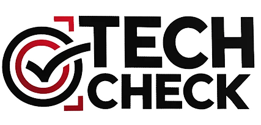

The Challenge
Traditional B2B prospecting had become increasingly ineffective,
with cold calls yielding dismal 1% meeting rates. Decision-makers
were overwhelmed with generic sales outreach, and Verizon needed a
fundamentally different approach to break through the noise.
19%
Call-to-Meeting Conversion
84%
Multiple Opportunity Areas
250%
Pipeline Value Increase
The Solution
I developed the "Tech Check Initiative," which flipped the
traditional sales approach. Rather than leading with products, the
program offered something prospects actually valued: a free,
comprehensive technology assessment conducted by solutions
architects.
The assessment evaluated the prospect's current technology
environment across eight dimensions:
- Cloud infrastructure
- Collaboration tools
- Communication systems
- Customer-facing technology
- Connectivity
- Applications
- Employee productivity tools
- Cybersecurity readiness
What made this approach powerful was its consultative nature.
Solutions architects weren't instructed to find gaps that Verizon
products could fill; they were directed to provide an honest
assessment regardless of whether Verizon had solutions for the
identified issues.
The Implementation
The output was a professional, visually appealing scorecard that
used a red/yellow/green rating system for each category, accompanied
by detailed recommendations, relevant visualizations, and clear,
actionable next steps.
I conducted a full-scale pilot in the East Market, making 1,700
calls and scheduling 320 appointments to test and refine the
approach.
The Results
-
19% Call-to-Meeting Conversion Rate: 19 times
higher than standard prospecting efforts
-
Multiple Opportunity Areas: The tech check
process revealed multiple opportunity areas in 84% of assessed
accounts
-
Increased Deal Size: Average of 3.2 potential
projects per customer identified
-
Expanded Pipeline: Pipeline value per account
increased by 250% compared to traditional prospecting methods
The Business Impact
Beyond metrics, the initiative fundamentally changed how sales teams
approached new prospects and how those prospects perceived Verizon.
Instead of seeing Verizon as just another vendor pushing products,
clients experienced them as strategic advisors invested in their
technological success.
The Tech Check methodology spread rapidly throughout the
organization, becoming a standard best practice for engaging new
prospects. It evolved into a core go-to-market strategy that
differentiated Verizon in a crowded marketplace and drove
significant revenue growth.
The Leadership Lesson
This case study demonstrates my ability to fundamentally reimagine
customer engagement. By creating genuine value for prospects before
asking for their business, I established a new paradigm that aligned
Verizon's success with customer outcomes. The approach built trust,
positioned Verizon as a thought leader, and created natural
opportunities for deeper business relationships.